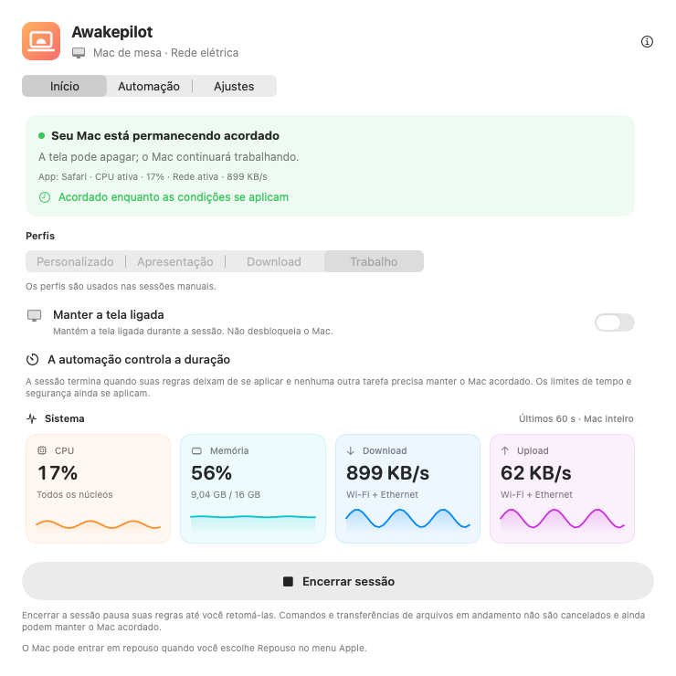
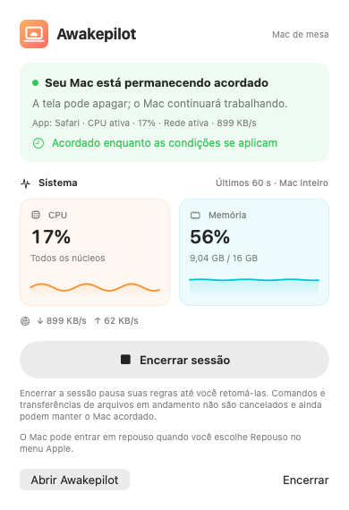
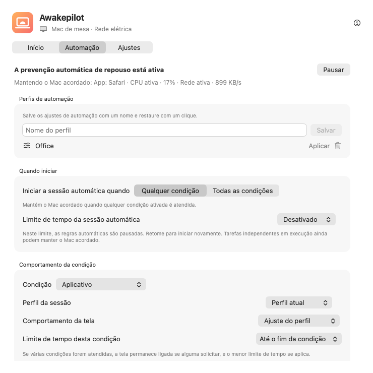

Sessões flexíveis
Mantenha o Mac ativo sem limite, por uma duração ou até uma data e hora exatas.
15 min1 h2 h∞
Evite o repouso automático durante compilações, exportações de vídeo e grandes transferências. Defina uma duração ou condições. Ao terminar, o Awakepilot deixa de manter o Mac ativo, salvo se outro trabalho ainda precisar disso.


Escolha uma duração ou condições de início. Quando a proteção termina, o Mac segue seus ajustes de repouso; não entra em repouso imediatamente.
Mantenha o Mac ativo sem limite, por uma duração ou até uma data e hora exatas.
Acompanhe CPU, memória, downloads e uploads em gráficos claros ao vivo.
Escolha o que observar. Mantenha o Mac ativo enquanto um app está aberto, um processo roda ou um disco escolhido está conectado.
Considere adaptadores, limites de bateria, nobreak e preferências da tela.
Ajude a manter discos externos ativos atualizando regularmente um pequeno arquivo em cada disco gravável escolhido.
Veja quando a proteção começou, por que continuou e quando terminou.

Veja apps, processos e condições que mantêm o Mac ativo. Quando as regras deixam de valer e nenhum outro trabalho precisa da proteção, os ajustes normais de repouso voltam a valer.
Um app aberto não prova que uma tarefa continua rodando. Menos atividade de CPU ou rede também não confirma sua conclusão.
Escolha o que observar, como a tela se comporta e uma duração máxima. Confira condições ativas e mudanças recentes no app.
Inicie na rede do estúdio ou VPN de trabalho. Mantenha a tela disponível para chamadas e pare no limite de segurança.
Observe o processo de exportação pelo nome e permita apagar a tela. A proteção termina com o processo, salvo se outra regra ou tarefa ainda precisar dela.
Reaja à montagem de um disco de arquivo, proteja a cópia e use Drive Alive apenas no volume gravável escolhido.
Inicie com uma condição ou exija todas. Por exemplo: apenas no Wi-Fi do escritório com um disco externo conectado.
O Awakepilot atualiza um pequeno marcador nos discos externos graváveis escolhidos. Não sobrescreve arquivos de outros apps e remove seu marcador ao desativar, mesmo após reconectar o disco.
Saiba sempre o que acontece. O Awakepilot registra transições úteis sem encher o histórico com cada amostra de CPU ou rede.
Acompanhe a rede ou um disco de backup conectado. A regra termina se a atividade permanecer abaixo do limite ou o disco desconectar.
Observe um processo do terminal pelo nome ou mantenha o Mac ativo durante toda a execução de um comando.
Use um perfil de tela ligada apenas enquanto a condição de apresentação estiver ativa.
Mantenha o Mac acessível com as proteções de energia e duração ativas.
Sem conta, anúncios, análise ou telemetria. Os ajustes ficam locais; o Awakepilot acessa seu site para verificar atualizações e baixar pacotes oficiais.
Leia os detalhes de privacidade →Baixe a versão universal para macOS, assinada e notarizada pela Apple.
Arraste para Aplicativos. Sem conta ou assinatura.